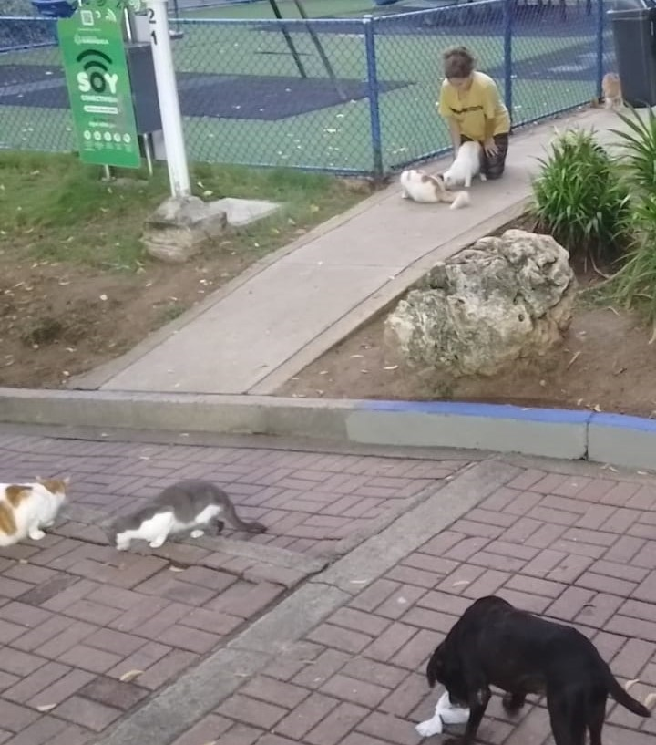
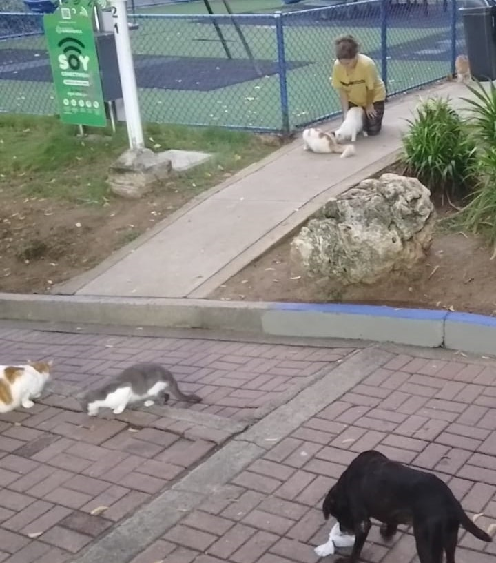

Inicio
Cada año, miles de animales son abandonados o maltratados, sufriendo soledad, hambre y falta de cuidado. Muchos de estos animales necesitan una segunda oportunidad para encontrar un hogar lleno de amor y seguridad. Adoptar a un animal rescatado es una forma maravillosa de cambiar su vida y la tuya. Cuando adoptas, das esperanza y cariño a un ser que lo necesita. Ayúdanos a darles un futuro mejor. ¡Adopta y haz la diferencia hoy mismo!
Objetivos
Conciencia
Generar sensibilidad en la población sobre el abandono y maltrato animal.
Adopción Responsable
Fomentar la adopción de mascotas desde refugios y hogares temporales.
Acción Comunitaria
Inspirar a los jóvenes a participar en iniciativas de protección animal.
Información
¿Sabías que cada año, miles de mascotas quedan abandonadas en las calles? Es un problema que no solo afecta a los animales, sino también a las comunidades. Aquí algunos datos:
 

Recursos y Solución
Con pequeños pasos, podemos hacer una gran diferencia:
- Comparte información sobre adopción en tus redes sociales.
- Colabora con refugios locales, dona tiempo o recursos.
- Adopta en lugar de comprar, y fomenta la esterilización de mascotas.
- Únete a campañas de rescate y concientización en tu comunidad.